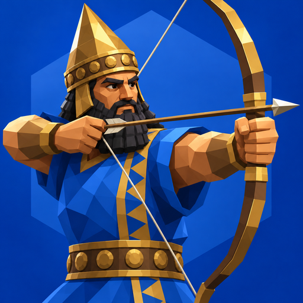
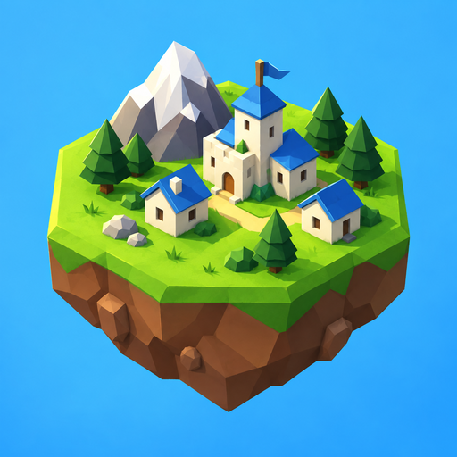

Pick one direction per section. Everything left after this gets generated in the chosen styles.
Same sprites in all three; the question is what makes a city look different over a game. Roofs and flags take the owner's color.
Polytopia style: a village becomes a town, then a walled city. Style stays ancient all game.
Every city looks like its era: mud brick, stone, brick and smokestacks, towers. Size stays fixed.
Size shows population, style shows era. The most information on the map, and 3 sprites per era to make.
Shown at home screen size and large.
A hero unit, like Polytopia's warrior icon. Babylon blue.

One hex of the world: city, mountain, forest. Says "map game" at a glance.

A gold laurel over a hex. Classic Civ prestige, quieter.
Continue is the big button in thumb reach; everything else is secondary.
Units from every era lined up. Pairs with the Bowman icon.
A floating hex world in the clouds. Pairs with the island icon.
Pyramids, library and lighthouse at sunset. Pairs with the laurel icon.
Each opens a phone mock with a direction switcher at the top.